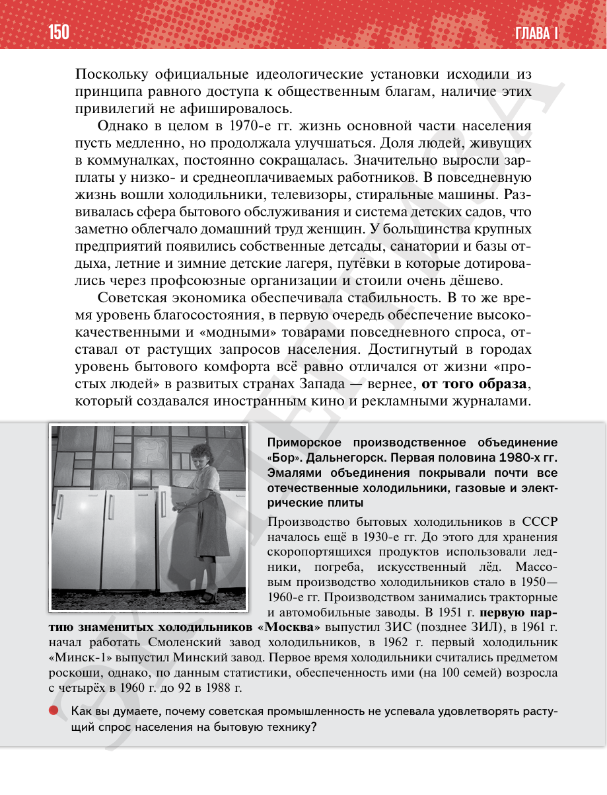

⌂
Мединский.нет
Последнее обновление: 29.08.2026
Мединский.нет
›
История России. 11 класс. Базовый уровень
›
Глава I. СССР в 1945—1991 гг.
›
§ 12. Социально-экономическое развитие СССР в 1964—1985 гг.
›
стр. 150

← стр. 149
Оглавление
стр. 151 →
×